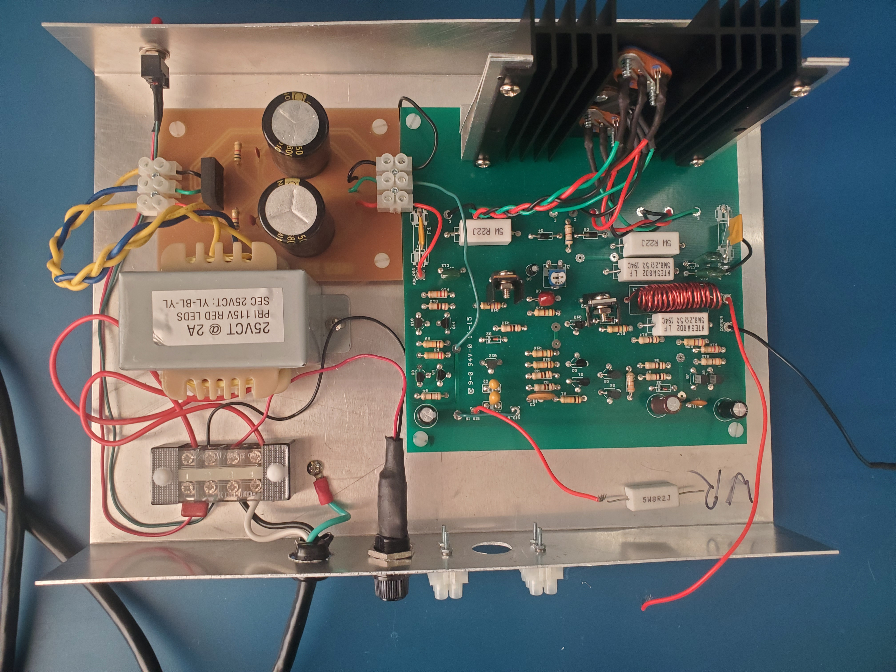
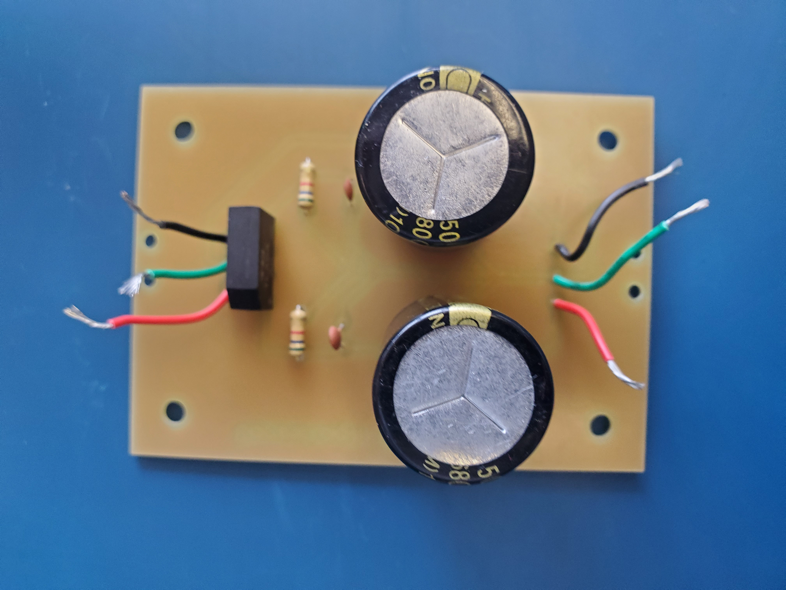
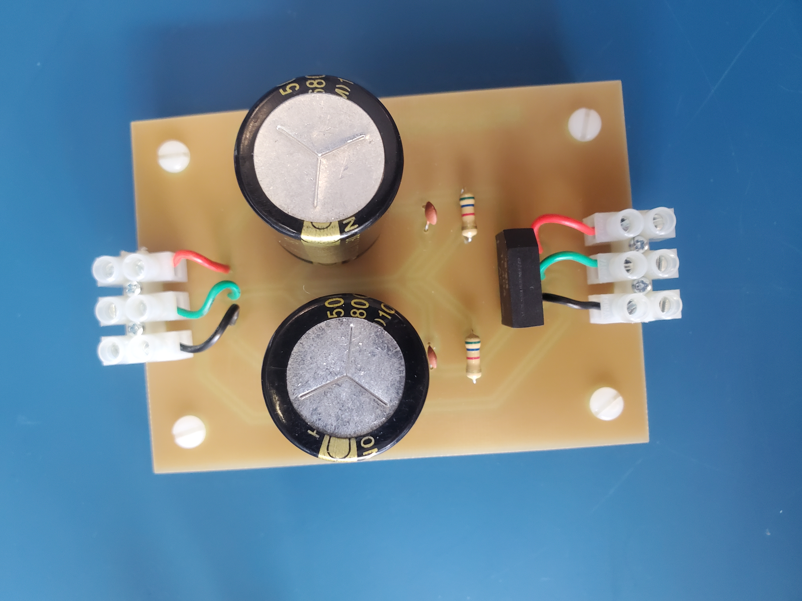
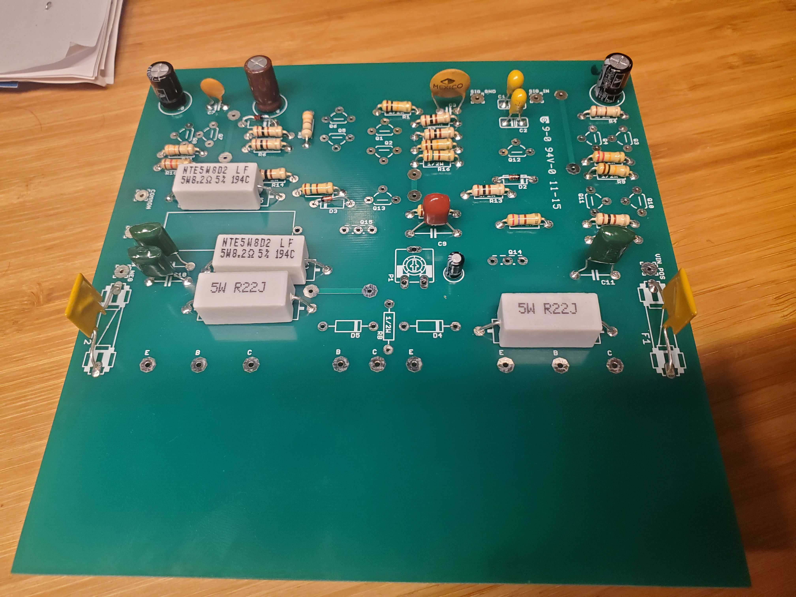
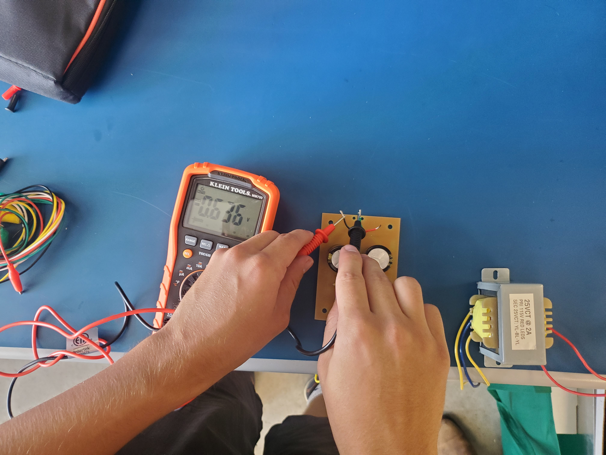
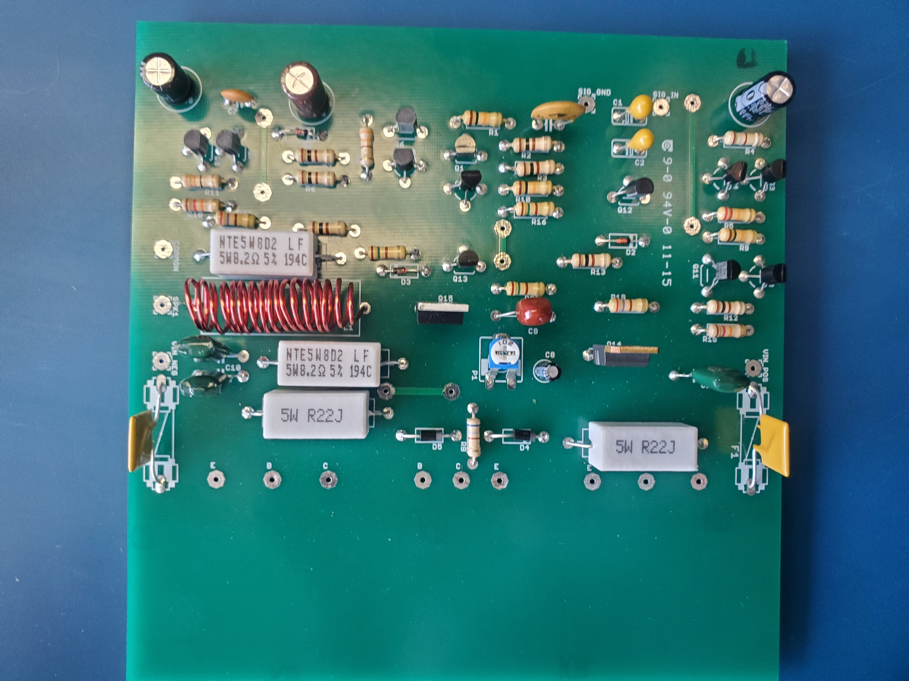
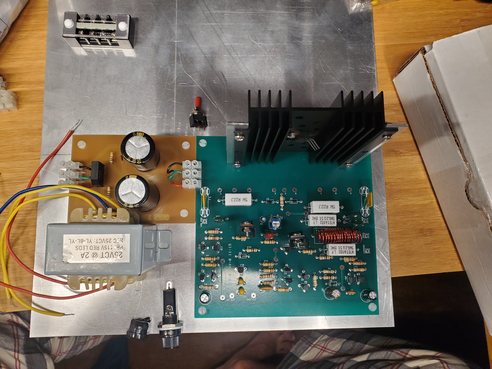
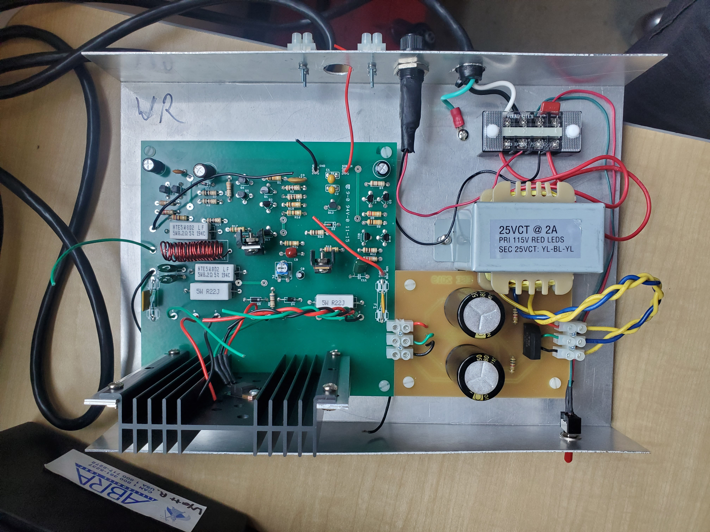

Semester Three Project 1: Audio Amplifier
This project was a collaborative build of an audio amplifier with a focus on implementing and understanding the use of transistors in the active region as amplifiers. The finished amplifier accepts a small AC input signal, increases its voltage and current, and drives an approximately 8-ohm load. It combines a split-rail power supply with three amplifier stages: a differential input stage, a common-emitter voltage stage, and a Class B push-pull output stage.
Project Overview
The amplifier was designed to deliver about 5 W to an 8-ohm load. Its transformer steps down the 120 V AC input, then a bridge rectifier and filter capacitors create the positive and negative DC rails used by the amplifier. The circuit also includes fuses, chassis grounding, current limiting, and short-circuit protection for safe operation.

The completed amplifier with its components mounted to the metal chassis.
Circuit Design
The input stage is a differential amplifier. One input receives the signal and the other receives the negative-feedback signal, allowing the circuit to amplify their difference. A common-emitter stage then provides most of the voltage gain. Finally, complementary transistors in the push-pull stage provide the large current gain needed by the load while keeping the voltage gain close to unity.
The output stage uses a potentiometer to balance the transistor bias voltages and reduce crossover distortion. Additional components provide compensation, high-frequency filtering, damping, and protection against inductive transients and short circuits.
Power Supply
The power supply uses a transformer, four-diode bridge rectifier, and large 6800 uF capacitors to produce smooth split rails. Smaller capacitors suppress high-frequency noise, while resistors discharge the large capacitors after power is removed. The practical measurements were approximately +15.1 V and -15.0 V DC at the supply rails.

The assembled power supply.

Power supply with its connectors installed.
Construction Process
The amplifier was prototyped and then mounted to a bent sheet-metal base. The build required careful polarity checks, continuity testing, secure solder joints, and mechanical alignment of the heat sinks and connectors.

Initial board with passive components.

Testing the output of the power supply.

Board populated with the self-wound inductor.

Planning the component layout on the metal base.

Components mounted to the bent metal base.
Measured Performance
With a sinusoidal input and an approximately 8-ohm load, the practical test produced an output of 8.9 V peak and 1.11 A peak. The measured overall voltage gain was 32.36, the current gain was approximately 40,000, and the power gain was 61.16 dB. These measurements agreed closely with the simulated output of 8.9 V peak and a predicted voltage gain of 31.23.